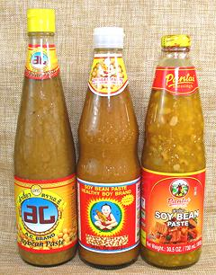
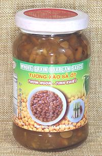
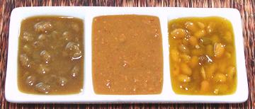

Yellow Bean Sauce

[Nuoc Tuong (Viet)]
Sometimes called "Brown Bean Sauce or "Soybean Paste", this sauce is
made from fermented yellow soy beans. It is a very common ingredient in
Thai and Vietnamese cuisine, and available in markets serving Southeast
Asian communities.
The famous "Dragonfly"
brand (Kwong Hung Seng) that everyone used
to recommend is now gone - banned by US FDA Import Alert 24-02. Multiple
FDA examinations found all samples unacceptably contaminated with
insect, rodent and bird materials. Thailand.
AC Brand
"Soybean Paste" (left in photo) is closest to "Dragonfly"
I've found, and is the most natural product. It would be my strong
recommendation if it were more widely available. Soybean, Wheat flour, Rice
Flour, Soy Sauce, Sugar, Water, Salt. 2016 US $2.79 for 24 ounces. Thailand.
Healthy Boy
"Soybean Paste" (center in photo) is widely
available. It is lighter in color and flavor, and smoother in texture
than "Dragonfly", but is an acceptable substitute. Soybean, Wheat flour,
Salt, Water, Sugar, Monosodium glutamate, Disodium 5'-inosinate, Disodium
5'-guanylate, Sodium benzoate. $2016 US $2.59 for 28 ounces. Thailand.
Pantai
"Soy Bean Paste" (right in photo). Pantai
(Pantainorasingh) is a well known and trusted Thai brand, but their
Yellow Bean Sauce is so sweet it is not at all acceptable for anything
I'd likely be cooking. Soybean, Sugar, Water, Salt, Rice Flour, Modified
Corn Starch, Wheat Flour, Glycine, Disodium 5'-inosinate, disodium
5'-guanylate, Citric Acid, Sodium Benzoate, Beta Carotene, Spices,
Coriander Seed, Cumin. 2016 US $3.49 for 30.5 ounces. Thailand.

2021 Update:
Lately I have been using Super.Q brand Bean Sauce
in a 16 oz jar. It is a very good substitute for Dragonfly. An added
convenience is should it not be used for some time and get dark on the top, it
is easy to spoon out the dark layer, not that there's anything wrong with that
layer except color. The ingredients list is unusually clean: Soybeans, Salt,
Sugar, Lemongrass, Water. Having no Wheat Flour it is Celiac safe. I notice the
version available on the Internet has Ginger instead of Lemongrass, but is
otherwise the same and that shouldn't be a problem. 2021 US $6.79.
There are many more brands and formulas of soybean paste in the markets.
Check the ingredients list, color, and texture, all visible on or in the
jar.
More on Sauces & Condiments.

The photo to the left shows the sauces in the same order as the bottles
in the top photo above. The Super.Q brand looks exactly the same as the AC
brand in the left bowl.
Buying:
These sauces can be found in markets serving
Southeast Asian communities, often in tall bottles, but also in short
jars, depending on brand. "Healthy Boy Brand" (Van Wal Yun Co.) is
widely distributed and a decent choice for most Thai recipes, unless you
prefer another brand available to you.
Storing:
This sauce contains enough salt that it can be
stored at a cool room temperature for a few months in a tightly sealed
container. For longer storage, refrigerate. If there is a lot of air
space in the jar, it's a good idea to repackage it in a smaller jar as
it will darken some from exposure to air.
Using:
This sauce may be used as is, with the whole
beans, or crushed to a paste depending on the effect that you want.
Ingredients:
Besides fermented soybeans, these sauces
generally contain some additional ingredients. Most are not Celiac safe
because they contain Wheat Flour. Glycine is a non-essential amino acid
that enhances sweetness. monosodium glutamate (E621),
disodium 5'-inosinate (E631) and disodium 5'-guanylate (E627) are
umami flavor enhancers, often used together Sodium benzoate (E211) is
an anti-bacterial preservative used in acidic foods. All are considered
safe for human consumption in this type of application, in both Europe
and the US.
bp_yelbeanz 100801 r 131001 r 160608 r 211218 -
www.clovegarden.com
©Andrew Grygus - agryg@clovegarden.com -
All photos on this page not otherwise credited are ©
cg1 - Linking to and non-commercial use
of this page permitted